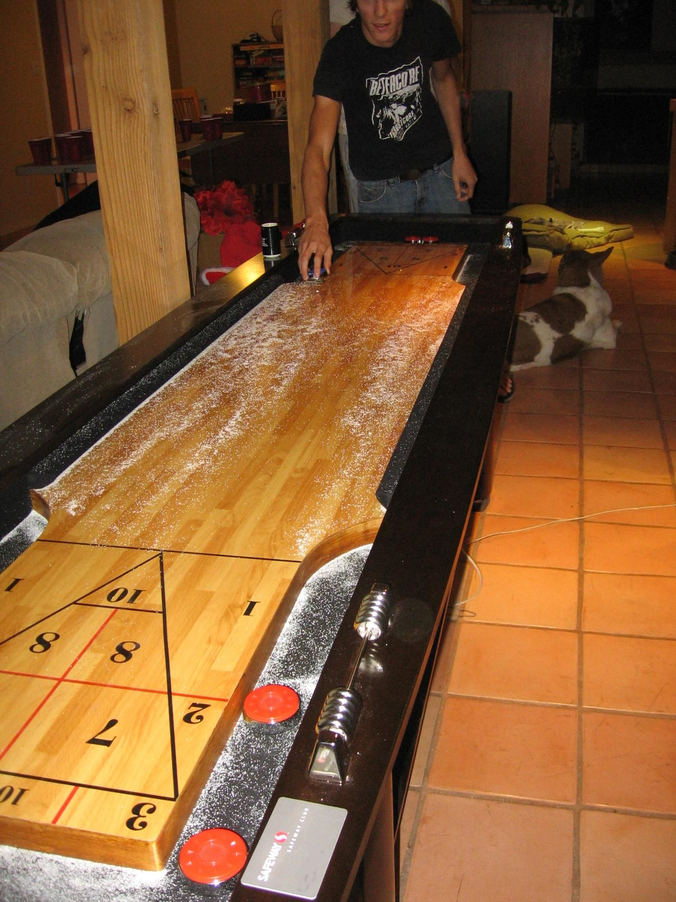

Shuffleboard · King's Cross
Electric Shuffle, King's Cross
- Shuffleboard starts at £10 per person for groups of 2 to 32, on tables that seat up to 16.
- Bottomless brunch runs from £38 per person, with two hours of pizza and Prosecco or beer alongside an hour of shuffleboard.
- Players must be 18 or older to use the tables; younger children are welcome in the bar before 5pm.

Photo of shuffleboard, not this specific venuePhoto: Guroadrunner / Wikimedia Commons, CC BY 3.0
What is Electric Shuffle, King's Cross?
Electric Shuffle, King's Cross is a shuffleboard bar a short walk from Coal Drops Yard. Camera-tracked scoring runs four different games on tables that seat up to 16 people, with food built around sourdough pizza and a full cocktail list.
How does it work?
Each table hosts up to 16 people across four games, with cameras tracking the pucks and capturing action-replay footage of the best shots. Groups of 33 to 400 can combine multiple tables for a hosted tournament. Tables are held for 15 minutes past the start of a booking, so it's worth arriving on time.
Age policy
Players must be 18 or older to use the shuffleboard tables, or even stand around them, for health and safety reasons. Children are welcome in the bar areas before 5pm if you're just there for food.
How much does it cost?
| When | 60 minutes | 90 minutes |
|---|---|---|
| Sunday to Tuesday | £10per person | £14per person |
| Wednesday to Saturday | £13per person | £17per person |
How much is Electric Shuffle King's Cross from Sunday to Tuesday?
From Sunday to Tuesday, a table costs £10 per person for 60 minutes or £14 per person for 90 minutes.
How much is Electric Shuffle King's Cross from Wednesday to Saturday?
From Wednesday to Saturday, a table costs £13 per person for 60 minutes or £17 per person for 90 minutes.
- Saturday bookings need a minimum group size of 6 or more.
What is the food and drink like?
Food is built around sourdough pizza, with sharing plates and a full cocktail list. Drinks are ordered to the table.
How do you get there?
Get directions on Google Maps ↗
1 Lewis Cubitt Park, London N1C 4EJ. King's Cross St Pancras is around 11 minutes on foot, covering six Underground lines plus the mainline and Eurostar; Euston is about 23 minutes away.
How do you book?
Shuffleboard and brunch for groups of 2 to 32 can be booked through Electric Shuffle's website. Larger groups, from 33 up to 400, go through the events team for tailored food and drink packages.
Common questions
- How much does shuffleboard cost at Electric Shuffle, King's Cross?
- Shuffleboard starts at £10 per person for groups of 2 to 32. Bottomless brunch, which adds two hours of pizza and Prosecco or beer to an hour of shuffleboard, starts at £38 per person.
- Where is Electric Shuffle, King's Cross?
- 1 Lewis Cubitt Park, London N1C 4EJ, a short walk from Coal Drops Yard. King's Cross St Pancras is around 11 minutes on foot.
- Is there an age limit at Electric Shuffle, King's Cross?
- Yes. Players must be 18 or older to use the shuffleboard tables or stand around them. Children are welcome in the bar areas before 5pm for food.
- How many people can play on one shuffleboard table?
- Up to 16 people can play at a single table across four games. Groups of 33 to 400 can combine multiple tables through the events team.
You might also like
Similar venues in London
Spotted something wrong on this page — a price, an opening time, a fact that's changed? Tell us and we'll check it.